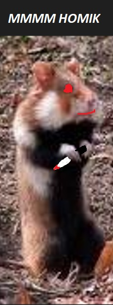

<!DOCTYPE html>
<html lang="pl"></html>
<head>
    <meta name="keywords" content="tygrys,kot,lef,lew,lefkot,lewkot,tygrkot, LUBIE JEŚĆ PLACKI ZIEMNIACZANE MAMY BO SOM DOBŁE"/>
    <meta name="description" content="to jest strona o kotkach"/>
    <meta charset='utf-8'>
    <meta http-equiv='X-UA-Compatible' content='IE=edge'>
    <title>My first page</title>
    <meta name='viewport' content='width=device-width, initial-scale=1'>
    <link rel='stylesheet' type='text/css' media='screen' href='main.css'>
    <script src='main.js'></script>
    <link rel="stylesheet" href="style.css" type="text/css">
</head>
<body>
    <div id="container">
        <div id="logo">
            <h1>najlepse zwieszenta na siwiecie</h1>            
        </div>
        <div id="nav">
            gówno <br/>
            gówno2 <br/>
            piesiok <br/>
            tinki łinki <br/>
            dipsi<br/>
        </div>
    
        <div id="content">
            <h2>Żubr europejski, żubr (Bos bonasus)</h2>
            gatunek łożyskowca z rodziny wołowatych, rzędu parzystokopytnych. W 2013 roku światowa liczebność gatunku wynosiła 5249 osobników,
             z czego 1623 przebywało w hodowlach zamkniętych, a 3626 żyło w wolnych i w półwolnych populacjach[6]. Według danych z 2013 roku 
             w Polsce żyło 1377 żubrów, z czego większość (1138) w stadach wolnościowych (pięć populacji)[6], z końcem 2017 liczba ta wzrosła
              do 1873 osobników[7], z końcem 2019 do 2269 zwierząt[8], a u schyłku 2020 do 2316[9].
        </div>
    
        <div id="ad">
            
        </div>
    
        <div id="footer">
            MMMMMMMMMMMM homiki i kotki &copy; wszelykie prawa saztszeżonie
        </div>
    </div>


    <h1>to jest profesjonalna strona internetowa która nigdy nie zostanie opublikowana ponieważ TAK</h1>
    <a href="https://pl.wikipedia.org/wiki/Kot_domowy" target="_blank" title="kotki erłopejskie wfdjnavskhgfjyhbvrse">
        
    </a>
    <h1>najlepsze kotki erłopejskie:</h1>
    kot filemon <br /> kot bonifacy <br /> krecik <br /> <br /> 
    <a href="https://pl.wikipedia.org/wiki/Chomik_europejski" target="_blank" title="homiki erłopejskie wfdjnavskhgfjyhbvrse">
        
    </a>
    <h1>najlepsze chomiki erłopejskie:</h1>
    homik <br /> puszek <br /> jerry <br /> <br /> 


    
</body>
</html>